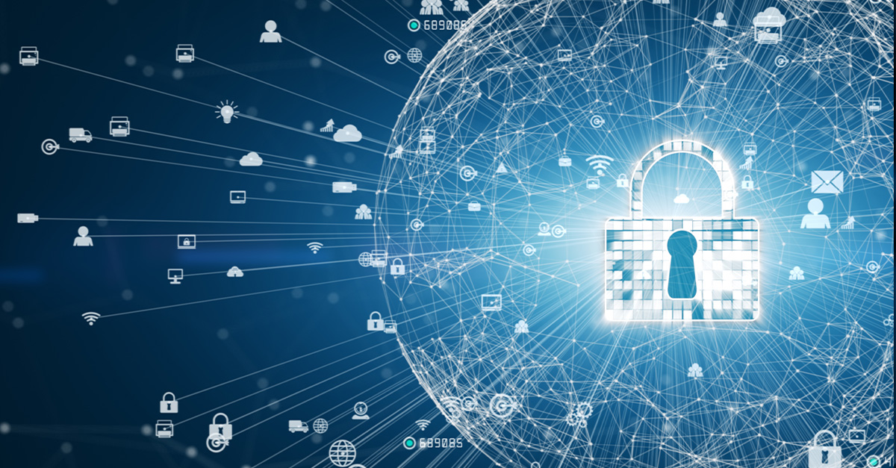

My Career Interest : Cybersecurity
Cybersecurity is one of the most important fields in technology today. It focuses on protecting digital systems, networks, and data from cyber threats and attacks. In a world where technology drives everything — from banking to healthcare — cybersecurity ensures that information stays safe and trustworthy. I chose this field because it combines technical problem-solving, creativity, and a sense of responsibility to protect others online.
My Goals in Cybersecurity
My goal is to become a cybersecurity analyst who can detect, prevent, and respond to security threats effectively. I enjoy analyzing how systems work and finding ways to make them stronger. As part of my studies, I’m learning how to identify vulnerabilities, use networking tools, and understand system behavior under different types of attacks. In the future, I plan to specialize in ethical hacking or digital forensics to contribute to safer online spaces.
Cyber Awareness and Protection
One of the most important parts of cybersecurity is awareness. People need to understand the value of secure passwords, two-factor authentication, and safe browsing habits. Simple actions such as verifying links before clicking and updating software regularly can prevent most attacks. Building awareness is just as important as building firewalls.
My Learning Journey
Through my coursework in Python, data networking, and IT fundamentals, I’m developing strong technical and analytical skills. These courses have helped me understand how data travels across the Internet and how systems communicate securely. I’ve also explored basic ethical hacking labs and web development to strengthen my technical foundation.
The Future of Cybersecurity
As technology continues to expand through cloud computing, artificial intelligence, and the Internet of Things (IoT), the need for cybersecurity professionals will keep rising. Every new digital innovation creates both opportunities and challenges. My long-term vision is to be part of a team that develops smarter security systems and helps organizations defend against the cyber risks of tomorrow.